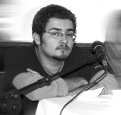

|
|
ارجاع پرونده امیر یعقوب علی به شعبه 54 دادگاه تجدید نظر
دو شنبه7 مرداد 1387

تغییر برای برابری: پرونده تجدیدنظر خواهی امیر یعقوب علی به شعبه 54 دادگاه انقلاب ارسال شده است. نسرین ستوده وکیل امیر یعقوب علی با اعلام این خبر به تغییربرای برابری گفت:« متعاقب تجدید نظرخواهی در خصوص حکم صادره علیه امیر یعقوبعلی مطلع شدم پرونده ایشان به شعبه 54 دادگاه تجدیدنظر ارسال شده است. لذا با مراجعه به دادگاه مذکور از قاضی مربوطه درخواست نمودم به استدلال حکم صادره مبنی بر محکومیت امیر یعقوبعلی جهت جمع آوری امضا توجه کافی به خرج دهند» وی در ادامه با تاکید بر جرم نبودن جمع اوری امضا گفت :« هم چنان که قبلا نیز اعلام شده است جمع آوری امضا به خواسته تغییر قوانین کاری کاملا قانونی و مسالمت آمیز است و قابل مقایسه با جمع آوری امضا و اعلام درخواست به هریک از سازمانها یا نهادهای دولتی است. اینجانب امیدوارم که دادگاه تجدید نظر به استدلالات ذکر شده بر لایحه تجدید نظر توجه کافی نموده و رای برائت موکلم را صادر نماید.»
امیر یعقوبعلی از اعضای کمیته پسران کمپین یک میلیون امضا در 20 تیر ماه 1386 هنگام جمع اوری امضا در پارک اندیشه تهران بازداشت شد و 29 روز در زندان اوین بود.